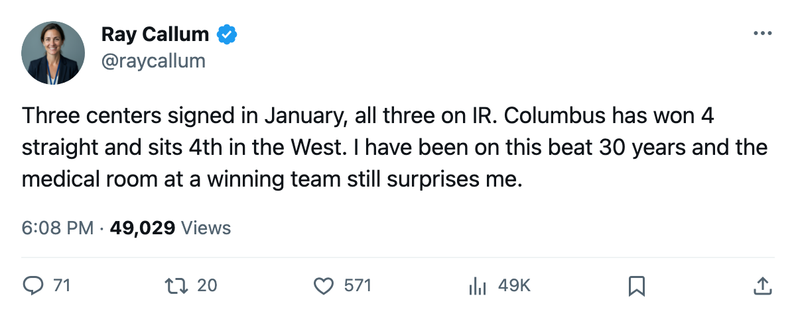

The Infirmary: Columbus Signed a Center on January 8 and He Joined the List Within 4 Days
Vyborny becomes the third January acquisition to land on injured reserve, and the Jackets have won 4 straight anyway
 Ray CallumSenior correspondent · Home Ice Network
Ray CallumSenior correspondent · Home Ice Network David Vyborny78 signed with
David Vyborny78 signed with  Columbus Blue Jackets on January 8. He is out with a knee, the league designates, with an onset between January 10 and January 12. The return date is January 17.
Columbus Blue Jackets on January 8. He is out with a knee, the league designates, with an onset between January 10 and January 12. The return date is January 17.
That makes him the third player the Blue Jackets acquired in January who is now on the injured list.  Espen Knutsen80 and Tyler Wright78 arrived January 1 and went on reserve within the week. Knutsen is out with a rib until February 20; Wright is out with an abdomen until February 19. Both are centers.
Espen Knutsen80 and Tyler Wright78 arrived January 1 and went on reserve within the week. Knutsen is out with a rib until February 20; Wright is out with an abdomen until February 19. Both are centers.  Todd Marchant82, the other center on the list, has been out since November with a knee and returns January 30.
Todd Marchant82, the other center on the list, has been out since November with a knee and returns January 30.
Three of four centers, gone. The Blue Jackets have won 4 straight and sit 4th in the West with 54 points.
The winning that should not be possible
The last 4 games: a 4-3 overtime win at  Vancouver Canucks on January 10, a 3-2 win at
Vancouver Canucks on January 10, a 3-2 win at  Nashville Predators on January 6, and 2 more victories before that. In those 4 games the Blue Jackets outscored opponents 13-8.
Nashville Predators on January 6, and 2 more victories before that. In those 4 games the Blue Jackets outscored opponents 13-8.  Pascal Leclaire91 has started 31 of 42 games this season and carries a .74 workload share. The backup,
Pascal Leclaire91 has started 31 of 42 games this season and carries a .74 workload share. The backup,  Marc Denis90, has 10 appearances.
Marc Denis90, has 10 appearances.
The lineup has been reshuffled. Leclaire starts;  Artem Chubarov69 moved from wing to center on the fourth line in Vancouver on January 10, a shift that freed up a forward slot while the center depth evaporated.
Artem Chubarov69 moved from wing to center on the fourth line in Vancouver on January 10, a shift that freed up a forward slot while the center depth evaporated.
Columbus carries 37 injury spells and 280 days lost this season, the 3rd-highest total in the league behind  New York Islanders (352) and Vancouver Canucks (347). Knutsen's current rib spell is his 4th trip of the season. The Blue Jackets have cycled through Leclaire, Denis and
New York Islanders (352) and Vancouver Canucks (347). Knutsen's current rib spell is his 4th trip of the season. The Blue Jackets have cycled through Leclaire, Denis and  Fred Brathwaite79 in goal because Knutsen, Wright, Marchant and now Vyborny have taken 37 spells collectively across the roster.
Fred Brathwaite79 in goal because Knutsen, Wright, Marchant and now Vyborny have taken 37 spells collectively across the roster.
What the schedule says
The Jackets play at  Edmonton Oilers on January 13, at
Edmonton Oilers on January 13, at  Mighty Ducks of Anaheim on January 15, and at
Mighty Ducks of Anaheim on January 15, and at  Boston Bruins on January 18. Edmonton carries 38 points and a 1-game loss streak. Anaheim has lost 9 straight. Boston is 5th in the East but has lost 2 straight and carries 5 injuries of its own.
Boston Bruins on January 18. Edmonton carries 38 points and a 1-game loss streak. Anaheim has lost 9 straight. Boston is 5th in the East but has lost 2 straight and carries 5 injuries of its own.
The January 17 return date for Vyborny lands the day before the Boston trip. If he holds that date, Columbus gets a top-six forward back for the hardest test in the run. If he misses it, they face Boston without a healthy center on the roster.
